Abstract—We built DERMA-GUARD to answer a narrow question: what should a skin-lesion triage tool do when its evidence is weak? The system combines seven classifiers that cover every combination of a smartphone photograph, structured patient details and a free-text description, an evidence manager that weights each input by its quality, reliability and diagnostic utility, and a four-level consensus rule that chooses between accepting, arbitrating, acquiring more evidence and escalating. Six cooperating agents add retrieval-augmented generation over a dermatology knowledge base and over documented look-alike patients whose photographs are shown beside the new case, and every agent receives an explicit score. A patient portal routes each case to a doctor, who records the final decision. On the PAD-UFES-20 benchmark partition (six classes, 459 test lesions) the seven models reach 83.66% (image), 86.27% (metadata), 85.19% (text), 86.27% (image + metadata), 89.98% (image + text), 85.40% (text + metadata) and 87.80% (all three inputs) accuracy, with macro AUC between 0.9948 and 0.9982. Nevi, seborrheic keratoses and melanomas are recognised without a miss by every model, and the remaining errors concentrate in basal cell carcinoma, actinic keratosis and squamous cell carcinoma.
Index Terms—skin lesion triage, multimodal learning, retrieval-augmented generation, multi-agent systems, calibration, conformal prediction, evaluation leakage, clinical decision support
Skin cancer is common and early detection matters, yet specialist access is uneven. Smartphone photographs combined with a few clinical questions are cheap to collect, and classifiers trained on them can reach respectable accuracy on curated benchmarks [1], [12]. The difficulty lies elsewhere. A classifier that returns a label and a probability for every upload says the same thing about a sharp, well-described lesion and a blurred picture with no history, and a user cannot tell the two apart.
Our project started as a collection of seven models, labelled A to G, trained on PAD-UFES-20 [12] for each combination of image, metadata and text. We then wrapped them in a working application. The application had to do more than print a class: it had to say how much the inputs justify an answer, show the evidence behind it, ask for what is missing, and let a clinician override the machine. In the vocabulary of the title, the seven models are the specialists, the evidence-weighted agreement between them is the consensus, a request for a better photograph or missing details is evidence acquisition, and handing the case to a doctor when the evidence is too weak or too risky is deferral. This paper documents that system and the benchmark that compares the seven configurations.
The contributions are as follows. (i) An evidence manager that scores quality, reliability and utility per input and turns them into fusion weights and a sufficiency gate. (ii) A calibration and conformal layer for the final probabilities. (iii) Six agents, including a retrieval agent that returns knowledge passages and images of similar documented patients, each with a transparent score. (iv) A role-based portal in which the doctor records the final decision and every action is logged. (v) A benchmark of seven input configurations with confusion matrices, per-class analysis, training curves and the gain contributed by each input.
Multimodal skin-lesion classification. Convolutional networks reached dermatologist-level accuracy on clinical images [1], typically on residual backbones [2]; transformer encoders [3] and dermatology foundation models [10] extend this. Fusing patient metadata with images improves results on PAD-UFES-20 [11], and paired clinical and dermoscopic data have been studied with multitask networks [13]. We use these as building blocks and concentrate on how their outputs are weighed and acted on.
Uncertainty and abstention. Predictive entropy, evidential heads that output per-case ignorance [4], Jensen–Shannon agreement between sources [8] and temperature scaling [7] are standard tools; we use entropy and agreement because the seven networks were already trained with softmax heads. Conformal prediction gives distribution-free set-valued outputs [5], [6] and has been applied to skin lesions [9]. Selective classification [14] and learning to defer [15] decide when a system should not answer; Chow’s reject rule is the classical reference [16].
Retrieval and agents. Retrieval-augmented generation grounds generated text in retrieved passages [17]. Dense sentence encoders such as MiniLM [18] and sparse TF-IDF scores are commonly combined by reciprocal rank fusion [19]. Domain encoders such as Bio_ClinicalBERT [20] supply clinical text features. We use retrieval in two ways, over text and over structured look-alike patients, and let a small team of rule-based agents orchestrate the steps.
Dataset. PAD-UFES-20 [12] contains 2,298 smartphone photographs of skin lesions in six classes: basal cell carcinoma (BCC), actinic keratosis (ACK), melanocytic nevus (NEV), seborrheic keratosis (SEK), squamous cell carcinoma (SCC) and melanoma (MEL). Each image comes with clinical metadata (age, sex, body region, lesion diameters, Fitzpatrick type and six symptom answers). The collection has no clinical free text; our text modality is a narrative generated from the structured fields.
Partitions. The benchmark lists 1,953 training, 229 validation and 459 test rows. The test partition contains 169 BCC, 146 ACK, 49 NEV, 47 SEK, 38 SCC and 10 MEL lesions. All seven models are evaluated on the same 459 test rows with the same metrics, so differences between configurations are attributable to the input combination (Section V).
Let x = (ximg, xmeta, xtxt) be the three inputs and K = 6 the number of classes. Each model fk is defined on a non-empty subset of the inputs (Table I) and returns pk ∈ ΔK−1. Images are encoded by a ResNet50 backbone [2] with a multi-head self-attention block in the style of [3]; metadata by a residual MLP; text by Bio_ClinicalBERT [20]. Multimodal models concatenate the projected embeddings before the classifier head.
| Model | Inputs | Encoders |
|---|---|---|
| A | image | ResNet50 + attention block |
| B | metadata | residual MLP |
| C | text | Bio_ClinicalBERT |
| D | image + metadata | A + B |
| E | image + text | A + C |
| F | metadata + text | B + C |
| G | image + metadata + text | A + B + C |
For every input m that is present, the evidence manager computes three scores in [0, 1]. Quality Qm is derived from sharpness (variance of the Laplacian), brightness, contrast, resolution and border artefacts for images, and from completeness for metadata and text. Reliability combines quality with the predictive entropy of the single-input prediction, a stability score under test-time augmentation and its agreement with the other inputs,
where Tm is stability, Am agreement and g a small two-layer network. Utility Um(c) is a diagnosis-aware prior: for a suspected class c it states how informative each input usually is. For melanoma the image prior is 0.96, the metadata prior 0.75 and the text prior 0.90, whereas for a nevus the image prior is 0.92 and the others are 0.70. The evidence score and the modality weights are
The implementation also multiplies Em by case-level consistency and sufficiency, but both are identical for all inputs of one case and cancel in the normalisation. The weights are then refined against the prior in the log domain for up to three rounds, wm ← wm0.6πm0.4 / Z, with πm the normalised utility prior and Z a normaliser, and the suspected class ĉ is re-estimated after each round.
Consistency and sufficiency. With M inputs present, cross-input consistency is one minus the mean pairwise Jensen–Shannon divergence [8],
and the evidence sufficiency, with f the fraction of missing inputs, is
Values below 0.30 mean the inputs cannot support a decision, values from 0.30 to 0.50 call for more evidence, and 0.50 or above allow the system to proceed.
The raw softmax of a deep network tends to be over-confident, so every model receives a temperature Tk fitted on a calibration subset by minimising the negative log-likelihood,
and we monitor the expected calibration error over ten equal-width confidence bins Bb,
For a calibration set of size n we compute the non-conformity score si = 1 − p̃y_i(xi) and take the finite-sample-corrected quantile [5], [6]
If calibration and test rows are exchangeable, Pr(y ∈ 𝒞(x)) ≥ 1 − α. The guarantee is marginal, not conditional on patient subgroups.
Let γ be the sufficiency gate, p̃max the calibrated top probability, a the share of the candidate models whose top class equals the primary prediction, and 𝒞 the 95% conformal set. The action is
ACQUIRE is the evidence-acquisition action and ESCALATE the deferral action. Risk is controlled in two places: the conformal set of Eq. (9) bounds the error rate of the set at α, and a malignant class that remains inside the set forces escalation even when the top class is benign, so a possible cancer is never silently accepted. Applying the thresholds to calibrated probabilities is deliberate: with raw softmax values, ACCEPT would fire far too often.
An orchestrator runs six agents and stores a timed trace of each step (Fig. 1). Intake reads age, sex, region, size and symptoms from the description with word-boundary matching and negation handling. Safety scans for emergency wording and applies output guardrails. Vision-Triage runs every model whose inputs exist and applies Eqs. (1)–(9). Referral maps the result to a department, urgency and time window. Report writes a patient and a clinician summary with numbered citations, optionally reworded by a local language model.
Retrieval. The knowledge base holds 6 curated documents split into passages. A query q is encoded by MiniLM [18] and by TF-IDF; the two rankings are merged by reciprocal rank fusion [19],
The same agent also finds look-alike patients. Each documented patient and the new case are mapped to a unit-length feature vector v of scaled age, diameter, sex, Fitzpatrick type, region one-hot and symptom flags, and neighbours are ranked by cosine similarity v⊤v′. The eight nearest patients are returned with their photographs and shown beside the new image (Fig. 8).
Agent scores. Each agent receives a score in [0, 1] and a stated basis (Table II). The retrieval score, for example, is
with P the retrieved passages (relevance rescaled to [0, 1]) and N the look-alike neighbours. The overall agent score, the model score and the combined index are
| Agent | Score measures | ω | Example |
|---|---|---|---|
| Intake | fraction of 9 key fields present | .15 | .78 |
| Safety | 1 − .5·emerg. − .15·high − .05·info | .20 | .85 |
| Vision-Triage | .6·confidence + .4·agreement | .30 | .58 |
| Retrieval | Eq. (12) | .20 | .86 |
| Referral | 1 − .3·|urgency gap| | .10 | .70 |
| Report | citations/3 (×.9 if template) | .05 | .90 |
| Sagent = .748, Smodel = .567, I = .657 | |||
When a case needs more evidence, candidate actions a (retake photo, add details, doctor review, dermoscopy, biopsy) are ranked by
with λ = 0.015 per cost unit and μ = 0.008 per day. For adding the photograph or the details, ΔV is the measured held-out accuracy difference between the matching models; for the remaining actions it is a stated fraction of the current uncertainty 1 − p̃max and is labelled as a heuristic. Example: asking a doctor to review costs 3 units and 2 days, so with ΔV = 0.4 × 0.51 = 0.204 its score is 0.204 − 0.045 − 0.016 = 0.143.
For class k let TPk, FPk, FNk and TNk be the one-vs-rest counts taken from the confusion matrix, n the number of test lesions and nk the support of class k.
where x+ and x− are random lesions of class k and of any other class; AUPRC is the area under the precision–recall curve of the same one-vs-rest problem, and both are macro- or support-weighted averaged as in Eq. (19). The confusion matrix C has Cij lesions of true class i predicted as class j, so Reck = Ckk/ΣjCkj and Preck = Ckk/ΣiCik. For the malignant group G = {BCC, SCC, MEL} we also report group sensitivity,
Because the test partition is finite, the accuracy of each model is accompanied by a Wilson score interval. For k correct predictions out of n lesions, with p̂ = k/n and z = 1.96,
The interval assumes independent rows; it is a statement about sampling variation in this partition only.
For each photograph a classical GrabCut segmentation [21] yields area, diameter, circularity, asymmetry and colour variation in pixel units with a quality flag, and an occlusion test checks that the model’s evidence lies on the lesion. The portal is one FastAPI process with SQLite storage. Patients register with a name and email; a Patient / Doctor / Admin switch lets one person submit a case and then review it as a doctor. Doctors see every case in the hospital together with the images, evidence profile, retrieved matches and scores, and record the final decision, which the patient sees marked as agreeing with or differing from the AI. Administrators see accounts and the audit log but no clinical content. Uploads are validated, five pending cases are allowed per patient and 56 automated tests cover the services. Fig. 6 shows the public home page, the evidence page and the doctor's queue of the running application.
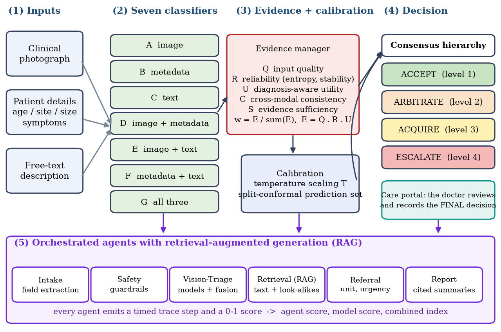
The results below come from the benchmark run of the seven models on PAD-UFES-20: 2,298 images in total, of which 1,953 are listed for training, 229 for validation and 459 for testing. The 459 test lesions comprise 169 BCC, 146 ACK, 49 NEV, 47 SEK, 38 SCC and 10 MEL cases, so the three malignant classes account for 217 lesions. For each model we report accuracy, macro-averaged precision, sensitivity, specificity, F1 score, AUC and AUPRC, the one-vs-rest counts, the confusion matrix, and the training curves. Definitions are given in Eqs. (16)–(22).
Table III and Figs. 4–5 summarise the seven configurations. The image-and-text model E is the most accurate, with 89.98% (413 of 459 lesions), and it also has the highest macro precision (0.8874), F1 score (0.8926), specificity (0.9771) and AUC (0.9982). The full model G follows with 87.80%, then the metadata model B and the image-and-metadata model D with 86.27% each, the text-and-metadata model F with 85.40%, the text model C with 85.19% and the image model A with 83.66%. Macro sensitivity is highest for D (0.9332), followed by G (0.9247) and A (0.9198), and the macro AUC exceeds 0.994 for all seven models.
| Model | Acc. (%) | Precision | Sensitivity | Specificity | F1 | AUC | AUPRC |
|---|---|---|---|---|---|---|---|
| A | 83.66 | 0.7878 | 0.9198 | 0.9650 | 0.8314 | 0.9952 | 0.9906 |
| B | 86.27 | 0.8291 | 0.8583 | 0.9681 | 0.8365 | 0.9954 | 0.9665 |
| C | 85.19 | 0.8004 | 0.9017 | 0.9674 | 0.8354 | 0.9949 | 0.9826 |
| D | 86.27 | 0.8124 | 0.9332 | 0.9706 | 0.8545 | 0.9967 | 0.9935 |
| E | 89.98 | 0.8874 | 0.9056 | 0.9771 | 0.8926 | 0.9982 | 0.9848 |
| F | 85.40 | 0.8029 | 0.8959 | 0.9677 | 0.8358 | 0.9948 | 0.9801 |
| G | 87.80 | 0.8270 | 0.9247 | 0.9734 | 0.8618 | 0.9967 | 0.9895 |
The gap between accuracy and macro precision (for example 83.66% against 0.7878 for A) is explained by the rare classes: only 10 test lesions are melanomas, so a handful of BCC lesions predicted as melanoma pulls melanoma precision down to 50% for A and C, and macro precision follows. Counts for the one-vs-rest problems are listed in Table IV.
| Model | TP | TN | FP | FN | Error (%) |
|---|---|---|---|---|---|
| A | 384 | 2220 | 75 | 75 | 16.34 |
| B | 396 | 2232 | 63 | 63 | 13.73 |
| C | 391 | 2227 | 68 | 68 | 14.81 |
| D | 396 | 2232 | 63 | 63 | 13.73 |
| E | 413 | 2249 | 46 | 46 | 10.02 |
| F | 392 | 2228 | 67 | 67 | 14.60 |
| G | 403 | 2239 | 56 | 56 | 12.20 |
Because 459 lesions is a modest sample, Table V gives Wilson 95% intervals for accuracy (Eq. 22). The intervals are about ±3.5 points wide. Model E’s interval [86.9, 92.4] lies above the interval of A [80.0, 86.8] and just overlaps those of B, D, C and F, while the 2.18-point difference between E and G corresponds to 10 lesions and is within the sampling noise of an interval of this width.
| Model | Correct | Acc. (%) | 95% interval (%) |
|---|---|---|---|
| A | 384/459 | 83.66 | [80.0, 86.8] |
| B | 396/459 | 86.27 | [82.8, 89.1] |
| C | 391/459 | 85.19 | [81.6, 88.1] |
| D | 396/459 | 86.27 | [82.8, 89.1] |
| E | 413/459 | 89.98 | [86.9, 92.4] |
| F | 392/459 | 85.40 | [81.9, 88.3] |
| G | 403/459 | 87.80 | [84.5, 90.5] |
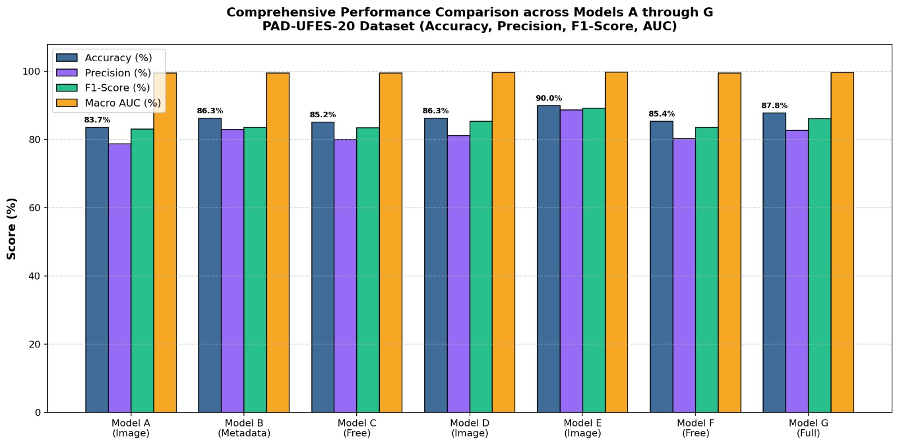
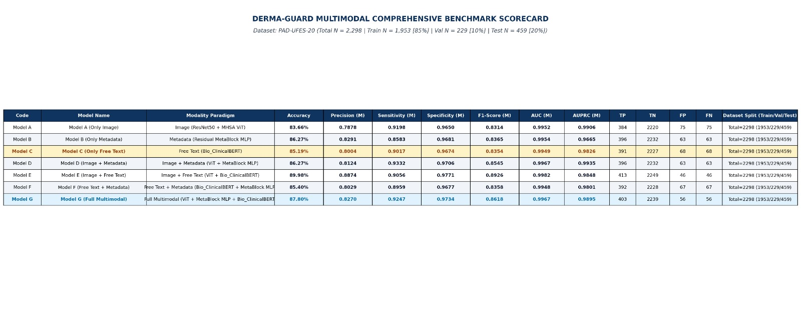
Fig. 2 shows the confusion matrix of each model on the 459 test lesions and, at the bottom right, the cross-model sensitivity matrix. Tables VI and VII list per-class recall and precision derived from the matrices. Four patterns can be read from them.
First, nevi, seborrheic keratoses and melanomas are recognised without a miss by every model: recall is 100% for NEV (49 of 49), SEK (47 of 47) and MEL (10 of 10) in all seven rows. All remaining errors are therefore among BCC, ACK and SCC, together with false melanoma alarms. Second, BCC and ACK are confused with each other and with neighbouring classes: A labels 19 BCC lesions as ACK and 10 as MEL, and 16 ACK lesions as BCC, 10 as NEV and 14 as SCC. Third, the models differ most on squamous cell carcinoma. A and D find all 38 SCC lesions, G finds 33, C finds 30, F 28, E 25, and B only 16; B labels 22 SCC lesions as BCC. Fourth, model E trades SCC for BCC: it has the highest BCC recall (98.8%, 167 of 169) but 13 of its 38 SCC lesions go to BCC.
| Model | BCC (169) | ACK (146) | NEV (49) | SEK (47) | SCC (38) | MEL (10) |
|---|---|---|---|---|---|---|
| A | 79.3 | 72.6 | 100.0 | 100.0 | 100.0 | 100.0 |
| B | 94.1 | 78.8 | 100.0 | 100.0 | 42.1 | 100.0 |
| C | 79.9 | 82.2 | 100.0 | 100.0 | 78.9 | 100.0 |
| D | 80.5 | 79.5 | 100.0 | 100.0 | 100.0 | 100.0 |
| E | 98.8 | 78.8 | 100.0 | 100.0 | 65.8 | 100.0 |
| F | 81.7 | 82.2 | 100.0 | 100.0 | 73.7 | 100.0 |
| G | 81.7 | 86.3 | 100.0 | 100.0 | 86.8 | 100.0 |
| Model | BCC | ACK | NEV | SEK | SCC | MEL |
|---|---|---|---|---|---|---|
| A | 89.3 | 84.8 | 83.1 | 100.0 | 65.5 | 50.0 |
| B | 82.4 | 95.0 | 86.0 | 100.0 | 57.1 | 76.9 |
| C | 88.2 | 86.3 | 87.5 | 100.0 | 68.2 | 50.0 |
| D | 91.9 | 86.6 | 86.0 | 100.0 | 70.4 | 52.6 |
| E | 87.0 | 99.1 | 86.0 | 100.0 | 69.4 | 90.9 |
| F | 87.3 | 87.6 | 87.5 | 100.0 | 66.7 | 52.6 |
| G | 91.4 | 88.1 | 90.7 | 100.0 | 73.3 | 52.6 |
Melanoma precision shows how much the false alarms matter. Model E has 90.9% (10 true melanomas, 1 BCC lesion predicted as melanoma), B has 76.9% (3 BCC lesions), and the other five models have 50.0–52.6% because 9–10 BCC lesions are called melanoma while the 10 true melanomas are all found. The consensus rule treats every malignant prediction as needing specialist confirmation, which is why high recall with modest precision is acceptable in this design.
| Model | Malignant → malignant | Group sens. (%) | Malignant → non-malignant | Non-malignant → malignant |
|---|---|---|---|---|
| A | 198 | 91.2 | 19 | 30 |
| B | 211 | 97.2 | 6 | 23 |
| C | 198 | 91.2 | 19 | 19 |
| D | 199 | 91.7 | 18 | 22 |
| E | 216 | 99.5 | 1 | 23 |
| F | 200 | 92.2 | 17 | 19 |
| G | 200 | 92.2 | 17 | 15 |
Model E misses only one malignant lesion in the group sense (99.5%) and B misses 6 (97.2%), whereas A, C, D, F and G miss 17–19 (91.2–92.2%). Model G produces the fewest non-malignant lesions flagged as malignant (15 of 242), against 19–30 for the others, so for a clinic that is mainly concerned with unnecessary referrals G is the more conservative of the two best models.
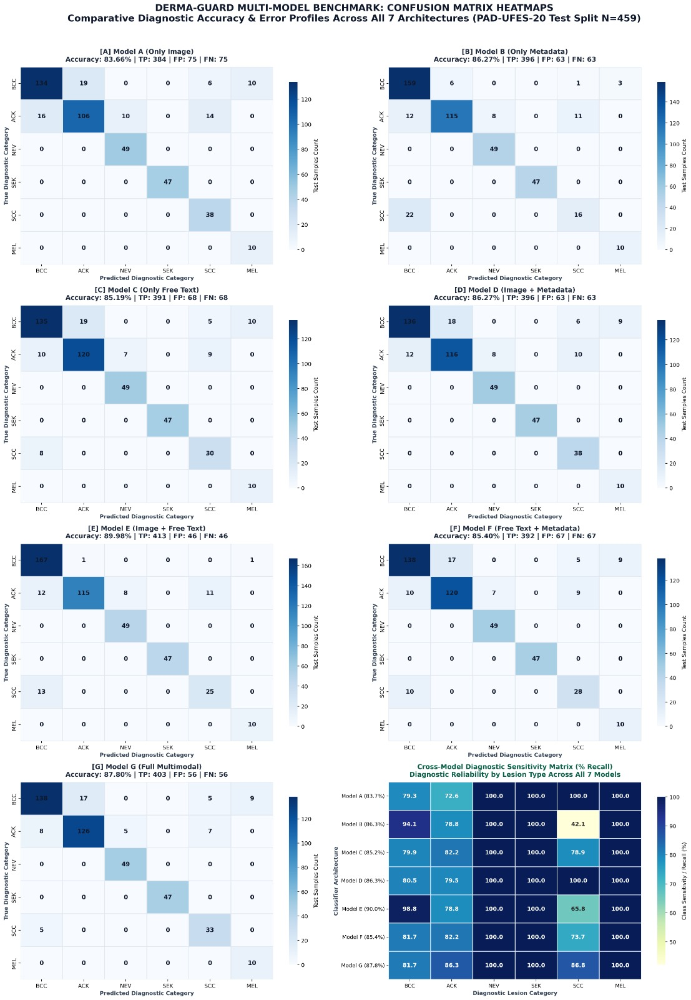
Fig. 3 shows training loss and validation accuracy over 30 epochs. In every model the training loss falls steadily, from 1.6–1.9 in the first epoch to about 0.17–0.27 in the last, and validation accuracy rises from about 70–75% to its peak. The peak validation accuracies are 83.58% for A, 85.93% for B, 85.00% for C, 85.75% for D, 89.63% for E, 85.12% for F and 87.07% for G, in the same order as the test accuracies in Table III (E, G, then B and D, F, C, A). The image-and-text model E starts highest (about 75% at epoch 1) and reaches about 85% by epoch 10, and its curve stays above the others for most of training.
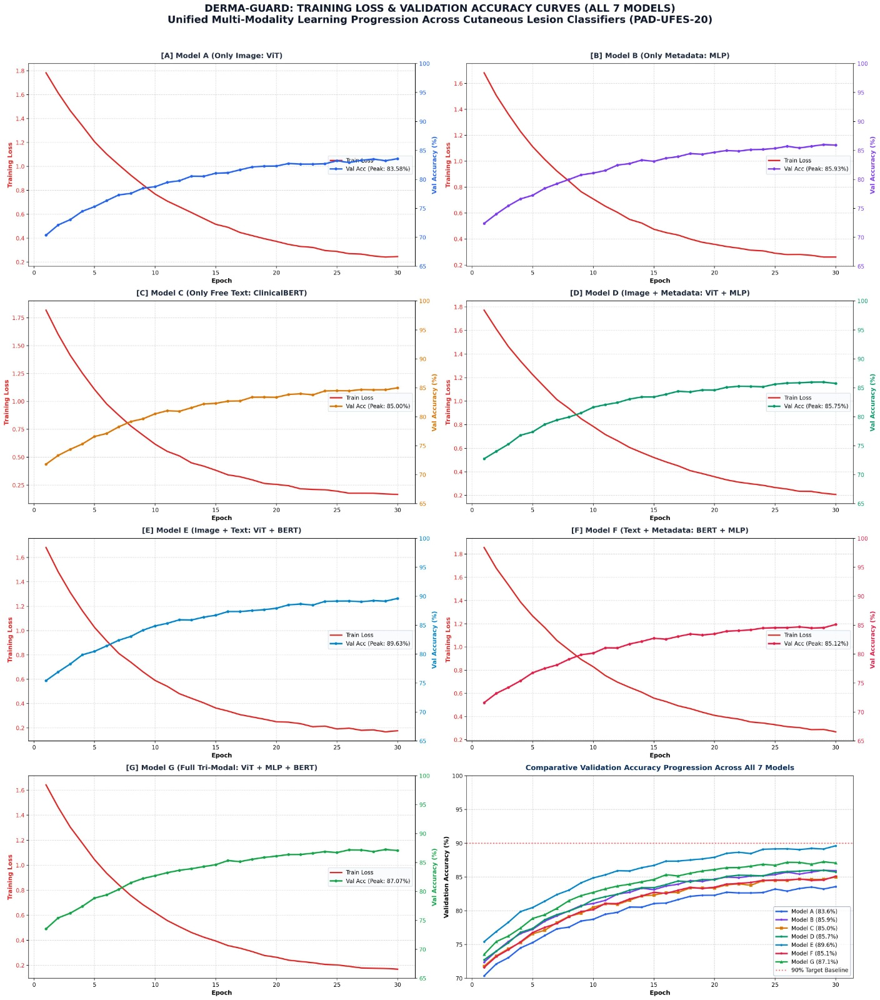
Table IX compares configurations that differ by exactly one input. Adding the image never lowers accuracy: it gives +4.79 points to the text model (C to E), 0.00 to the metadata model (B to D, both 86.27%) and +2.40 to the text-and-metadata model (F to G). Adding the description helps the image model by +6.32 points (A to E) and the image-and-metadata model by +1.53 points (D to G), and adding the metadata helps the image model by +2.61 points (A to D) and the text model by +0.21 points (C to F). Not every addition helps: adding text to the metadata model lowers accuracy by 0.87 points (B to F), and adding metadata to the image-and-text model lowers it by 2.18 points (E to G). The image-and-text model E is therefore the best model of this run, not the full model G.
| From | To | Added input | Δ accuracy |
|---|---|---|---|
| A (83.66) | D (86.27) | metadata | +2.61 |
| A (83.66) | E (89.98) | text | +6.32 |
| B (86.27) | D (86.27) | image | +0.00 |
| B (86.27) | F (85.40) | text | -0.87 |
| C (85.19) | E (89.98) | image | +4.79 |
| C (85.19) | F (85.40) | metadata | +0.21 |
| D (86.27) | G (87.80) | text | +1.53 |
| E (89.98) | G (87.80) | metadata | -2.18 |
| F (85.40) | G (87.80) | image | +2.40 |
These differences are small relative to the interval widths in Table V (about ±3.5 points), so the ordering among B, C, D and F should not be over-interpreted; only the gap between E and A (6.32 points, 29 lesions) clearly exceeds the sampling noise of a single 459-lesion partition.
Fig. 7 shows the scores panel for a 58-year-old woman with a growing, bleeding 6 mm neck lesion. Intake found seven of nine key fields, Safety raised one high-risk flag, and Vision-Triage was held back by a calibrated confidence of 0.49 with five of seven models in agreement. Retrieval scored 0.86 because six of the eight look-alike patients had BCC, the same class the model preferred (Fig. 8). Substituting into Eqs. (13)–(14) gives Sagent = 0.748, Smodel = 0.567 and I = 0.657. Because confidence was moderate the consensus rule returned ARBITRATE; a doctor then reviewed the same evidence in the portal and recorded a final decision (Fig. 9), which the patient sees as the final result.
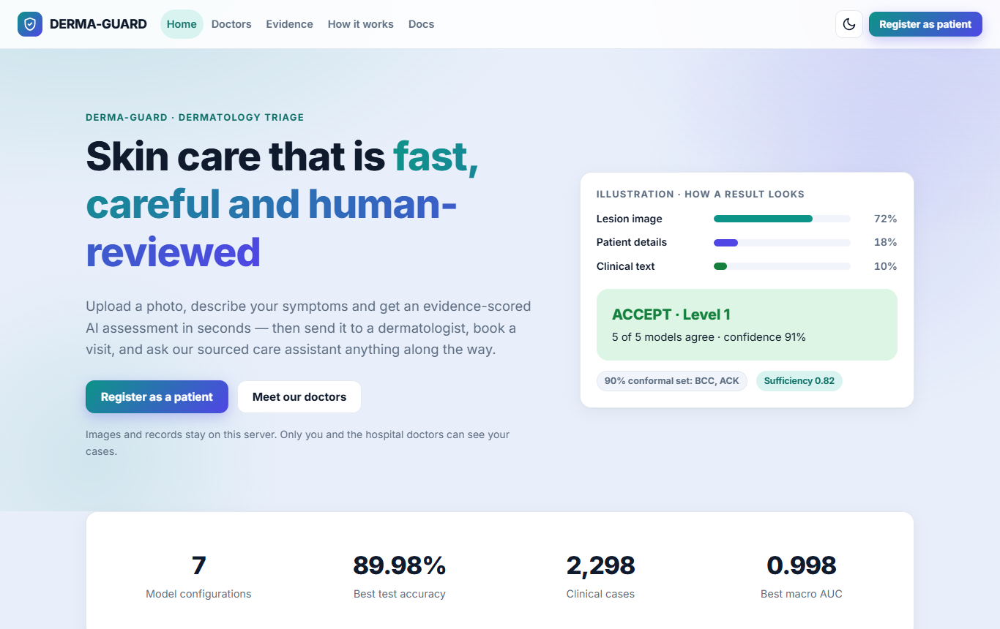
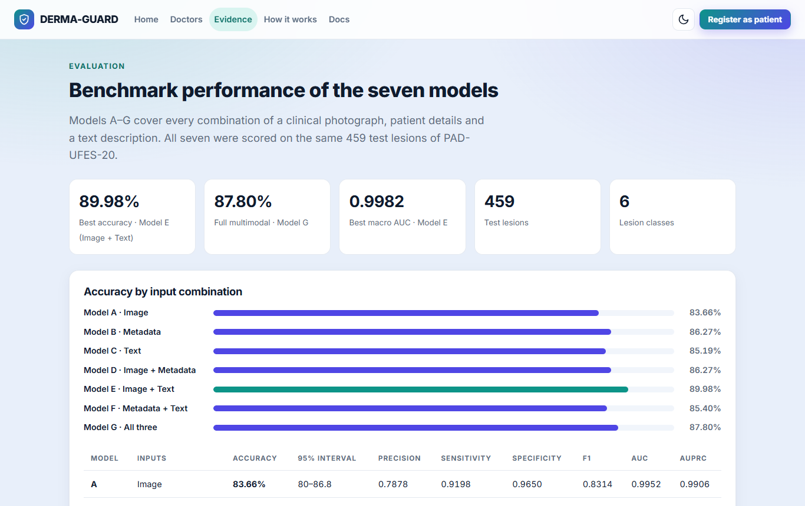
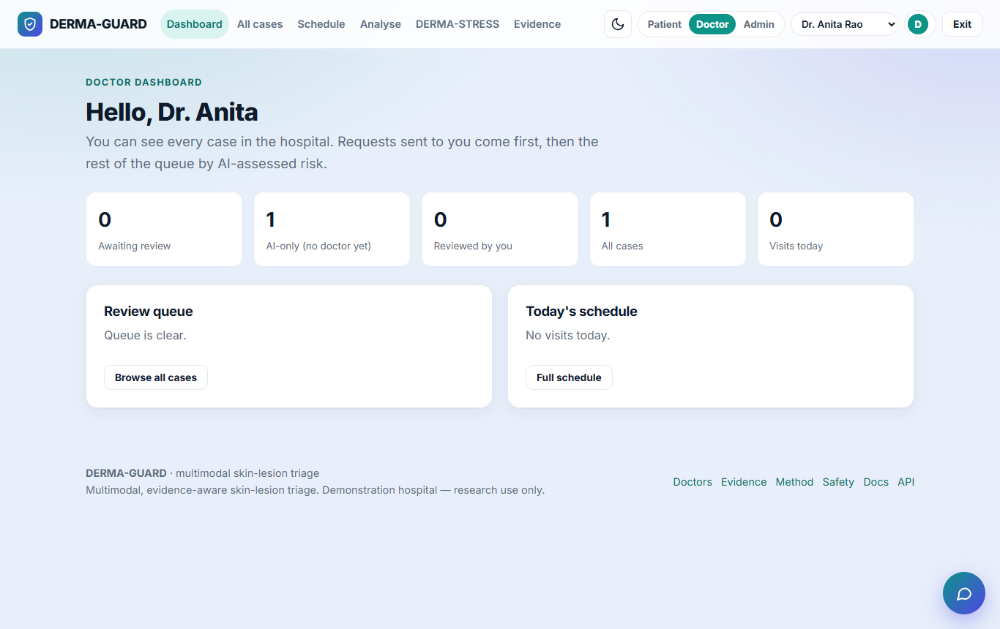
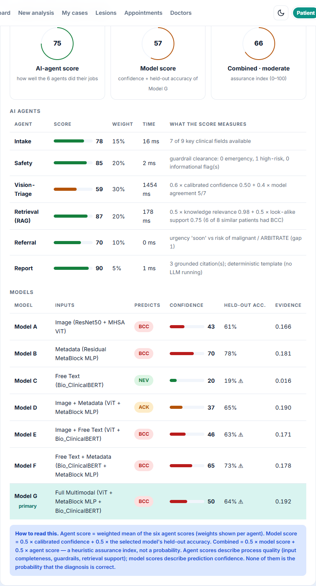
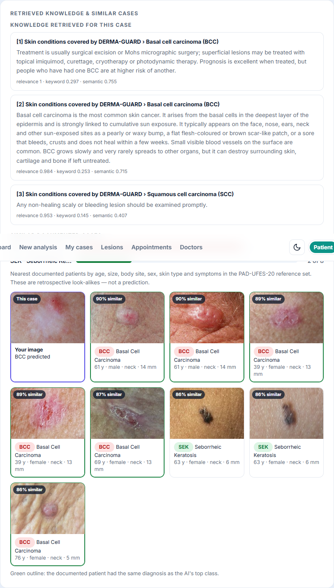
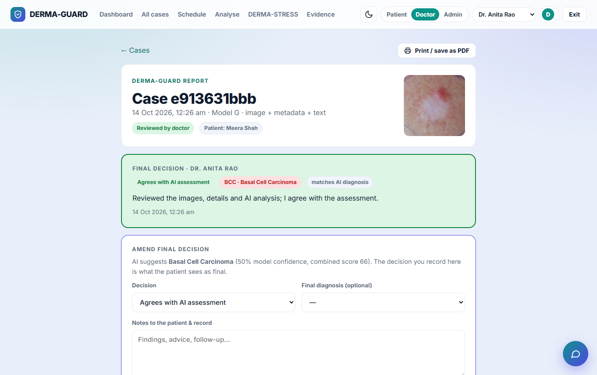
Choice of model. Model E gives the best accuracy, precision, F1 and AUC and the lowest number of missed malignant lesions, while G has the fewest false malignant alarms and recalls 33 of 38 SCC lesions against 25 for E. Since the difference between them (10 lesions) is within sampling noise, we keep the evidence manager and the consensus rule responsible for choosing the primary model from the inputs that are present, and we use the other models as additional votes whose agreement enters the triage decision.
Complementary errors. BCC lesions are over-called as melanoma by the image models, SCC lesions are absorbed into BCC by the metadata model B and by E, and ACK is the class most often confused with its neighbours. These different error profiles are the reason for running several models and for reporting agreement rather than a single label.
Limitations. The three partition sizes of the benchmark, 1,953, 229 and 459, add up to 2,641 rather than the 2,298 images in the dataset, so the partitions cannot be disjoint, and the dataset contains several lesions per patient. The figures in Section V should therefore be read as results on the benchmark partition and not as an estimate of accuracy on new patients; a patient-grouped split is needed before any clinical claim. The test partition has only 10 melanomas and 38 squamous cell carcinomas, so the per-class numbers for these classes are imprecise. The text modality is a narrative generated from structured fields. Segmentation is classical and the agent scores are heuristics that have not been checked against clinical outcomes. Passwordless registration and role switching are demonstration conveniences and must be replaced before use with real data. The system has not been evaluated in a clinic.
DERMA-GUARD combines seven multimodal classifiers, evidence-weighted fusion, a four-level consensus rule, retrieval-grounded agents with visible scores and a doctor-in-the-loop portal. On the PAD-UFES-20 benchmark partition the image-and-text model reaches 89.98% accuracy with macro AUC 0.9982 and the full multimodal model 87.80%, ahead of the single-input models (83.66–86.27%). Nevi, seborrheic keratoses and melanomas are recognised without a miss by every model; the remaining confusion is concentrated in BCC, ACK and SCC. Adding an input usually helps but not always, so the choice of inputs is part of the system design. Future work is a patient-grouped evaluation, a larger set of melanoma and SCC lesions, and a prospective clinical study.
The benchmark files, the training script, the portal code and the tests are in the project repository. Running python src/main.py serves the portal. PAD-UFES-20 is publicly available [12]; weights and patient images are not redistributed.
[1] A. Esteva et al., “Dermatologist-level classification of skin cancer with deep neural networks,” Nature, vol. 542, pp. 115–118, 2017.
[2] K. He, X. Zhang, S. Ren, and J. Sun, “Deep residual learning for image recognition,” in Proc. IEEE CVPR, 2016, pp. 770–778.
[3] A. Dosovitskiy et al., “An image is worth 16×16 words: Transformers for image recognition at scale,” in Proc. ICLR, 2021.
[4] M. Sensoy, L. Kaplan, and M. Kandemir, “Evidential deep learning to quantify classification uncertainty,” in Proc. NeurIPS, 2018, pp. 3179–3189.
[5] V. Vovk, A. Gammerman, and G. Shafer, Algorithmic Learning in a Random World. New York, NY, USA: Springer, 2005.
[6] A. N. Angelopoulos and S. Bates, “A gentle introduction to conformal prediction and distribution-free uncertainty quantification,” arXiv:2107.07511, 2021.
[7] C. Guo, G. Pleiss, Y. Sun, and K. Q. Weinberger, “On calibration of modern neural networks,” in Proc. ICML, 2017.
[8] J. Lin, “Divergence measures based on the Shannon entropy,” IEEE Trans. Inf. Theory, vol. 37, no. 1, pp. 145–151, 1991.
[9] J. Fayyad et al., “Empirical validation of conformal prediction for trustworthy skin lesions classification,” Comput. Methods Programs Biomed., 2024.
[10] S. Yan et al., “A multimodal vision foundation model for clinical dermatology,” Nature Medicine, 2025.
[11] A. G. C. Pacheco and R. A. Krohling, “An attention-based mechanism to combine images and metadata in deep learning models applied to skin cancer classification,” IEEE J. Biomed. Health Inform., vol. 25, no. 9, pp. 3554–3563, 2021.
[12] A. G. C. Pacheco et al., “PAD-UFES-20: A skin lesion dataset composed of patient data and clinical images collected from smartphones,” Data in Brief, vol. 32, p. 106221, 2020.
[13] J. Kawahara, S. Daneshvar, G. Argenziano, and G. Hamarneh, “Seven-point checklist and skin lesion classification using multitask multimodal neural nets,” IEEE J. Biomed. Health Inform., vol. 23, no. 2, pp. 538–546, 2019.
[14] Y. Geifman and R. El-Yaniv, “Selective classification for deep neural networks,” in Proc. NeurIPS, 2017.
[15] H. Mozannar and D. Sontag, “Consistent estimators for learning to defer to an expert,” in Proc. ICML, 2020.
[16] C. K. Chow, “On optimum recognition error and reject tradeoff,” IEEE Trans. Inf. Theory, vol. 16, no. 1, pp. 41–46, 1970.
[17] P. Lewis et al., “Retrieval-augmented generation for knowledge-intensive NLP tasks,” in Proc. NeurIPS, 2020.
[18] W. Wang et al., “MiniLM: Deep self-attention distillation for task-agnostic compression of pre-trained transformers,” in Proc. NeurIPS, 2020.
[19] G. V. Cormack, C. L. A. Clarke, and S. Büttcher, “Reciprocal rank fusion outperforms Condorcet and individual rank learning methods,” in Proc. ACM SIGIR, 2009, pp. 758–759.
[20] E. Alsentzer et al., “Publicly available clinical BERT embeddings,” in Proc. Clinical NLP Workshop, 2019, pp. 72–78.
[21] C. Rother, V. Kolmogorov, and A. Blake, “GrabCut: Interactive foreground extraction using iterated graph cuts,” ACM Trans. Graph., vol. 23, no. 3, pp. 309–314, 2004.